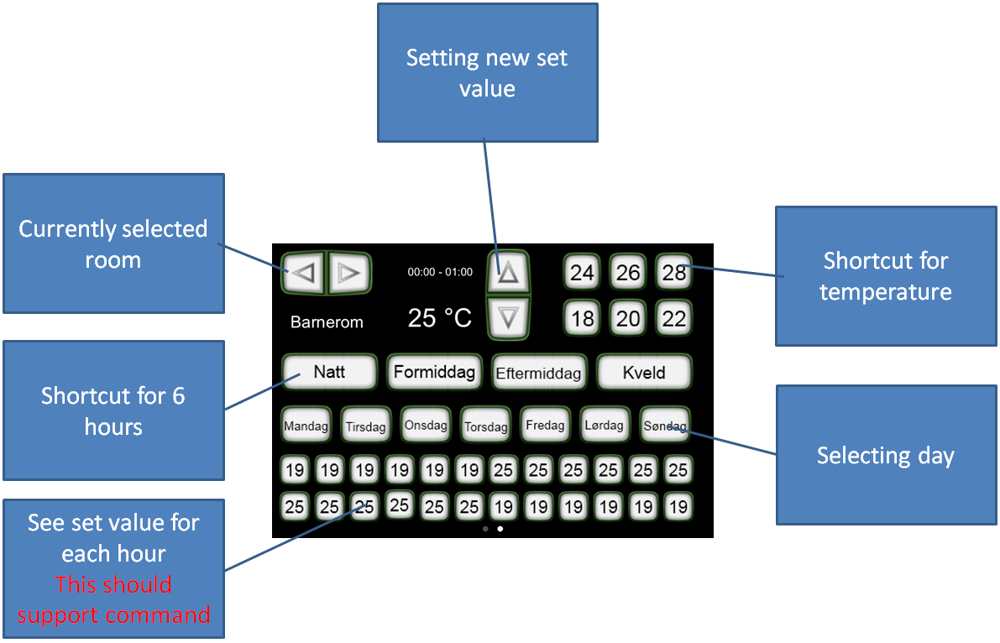

Hi.
I am currently working on a hourly schedule of temperature set values, and have been stuck with a problem.
I would like to have one button pr hour of a day, displaying the set degree value for that hour.
My problem is that i can use the image widget to get a sensor to update the current set value, but this does not support a command when pressed.
Using a button works fine, but here i can not link more than two images.
Can i use a button image and us a script to replace the image dependent on set value?
Any other suggestions to how i can achieve the goal here ?
Please find the attached screen to give more details.
The buttons are in Norwegian. Here is a quick translation:
Natt = Night
Formidag = Morning
Eftermiddag = Afternoon
Kveld = Evening
Mandag = Monday
Tirsdag = Tuesday
Onsdag = Wednesday
Torsdag = Thursday
Fredag = Friday
Lørdag = Saturday
Søndag = Sunday

Question 2.
To bring life to this screen i would have to generate a lot of commands. Are there any way to use parameters as part as the URL in a HTTP protocol ?
Example :
HTTP Protocol URL : http // 192.168.0.41/IISRestService/TempSettings/%ValueOfDeviceID%/%ParameterOfDeviceID%
Thank you for any input 
I will of course share my template when done.
Best regards
Bjørn Tore
{kind=link}
|
Don't put any text in your button and put a label or image in front of it. The ordering of UI elements in the designer is a bit dodgy (at best) and you'll have to play around with selecting/moving the objects to get the desired result. But the consoles should respect the order of widgets as they appear in the designer. |
|
Thanks. I will try that. |
|
You can still use a grid for the buttons if you prefer, but not for the label/image on top of it. I tend to not use grids and just use the alignment buttons to get the same effect. |
|
Thanks. This works, gives me the effect i am after. But I have a follow-up question. The GUI further up contains a lot of buttons and labels now, and to give it usability, I need high update frequencies on the commands. Should I be concerned? I have tried to use /rest/status/device_id to force updates to related sensors when needed, but this looks like it does not trigger the underlying command. Thanks a lot. |
|
The console polls the controller constantly (server push technology) and it depends on the command how the related sensor is updated. Some do this depending on a loop (HTTP and poolingInterval) some do it based on the technology (KNX). |
|
Thanks. I use HTTP, but i would like to avoid having polling interval set to 500ms. Can i force the sensor to update by using the Controller Rest API ? Thanks |
|
If you use HTTP this is the only way since HTTP is request based. |
|
hmmmm. Looking at the documentation. Could i make a button, conneted to a HTTP command invoking this url to update the sensor connected to my label ? Only trouble so far in testing this, is i do not know what the device_id is. I have not found anything in the documentation or forum explaining how i can get the device_id. Thanks again. btg |
|
Just a wild guess. Aren't devices the elements directly underneath <components> in the controller.xml? So e.g. switch and button in the example below? <components> <switch id="154"> <on> <include type="command" ref="172" /> </on> <off> <include type="command" ref="171" /> </off> <include type="sensor" ref="173" /> </switch> <button id="156"> <include type="command" ref="172" /> </button> |
|
The protocol needs to update the sensor first. |
|
I expected that to be the sensor_id in the last part of the URL. |
|
Are there any other way to update the sensor without using a high frequent polling interval of the connected command ? |
|
No, unless you program something for your device. |
|
Can you explain a little further what you're trying to do? I'm sort of lost in this thread of what is being attempted. The normal interaction between panels, controller and HTTP device works like this: (PANEL SENSOR VIEW) <-- HTTP Server Push -- (CONTROLLER SENSOR VALUE) -- HTTP Request/Response Poll (PollingInterval) --> (DEVICE) Under normal circumstances there's nothing more that can be done for a HTTP based device other than adjusting the polling interval. Consequently this makes HTTP one of the worst integration protocols for device or sensor integration. Nevertheless it remains one of the most popular. Adjusting the polling interval will impact the response time on the panel's sensor view. |
It is not that difficult to see what Bjørn Tore intends to do. He is concerned about the heavy load of polling his sensors. The case is, that his device can not only reply on http requests from the ORC, but his device is also capable of making autonomous http requests to the ORC. As I have been attempting similar things, I spend some time reading old threads that relate to this. Bjørn Tore is not the only one who wants to inititiate a Status update on an external (http) stimulus. As one of the original design documents says that this interface is not only intended for consoles, but also for devices, it may be worth to revisit the REST API in that context. Some use cases I found If I hadn't found these use cases, I had given up, and not posted this reply. For those getting tired, just ignore this reply. |
|
Pieter, I do understand the use case but I'm not certain that the existing REST API (and certainly not the existing calls) are the appropriate way to achieve what is being requested. Unfortunately, the answer is not that straightforward and I need to take time to think about how to best implement this. Time which I don't have at this moment but I'll eventually get back to this. |
|
Eric, Lately I have been working quite a bit on the RaZberry end to see what I could do with UDPListener. As a matter off fact I can now let the Razberry send a UDP message at the moment a Z/Wave device reported a change of status in the form of a (sensor,value)-pair. For example Switch2Status,off. It is a bit clumsy, but should do for further experiments with OR. See:RaZberry forum. |